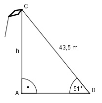

Aufgabe 72 Ein Drachen hängt an einer 43,5 m langen Schnur. Die Schnur bildet einen Winkel von 51° zum Boden. In welcher Höhe h befindet sich der Drachen?

Im Dreieck ABC: h sin 51° = --------- |*43,5 m 43,5 m h = sin 51° * 43,5 m = 0,7771 * 43,5 m = 33,8 m